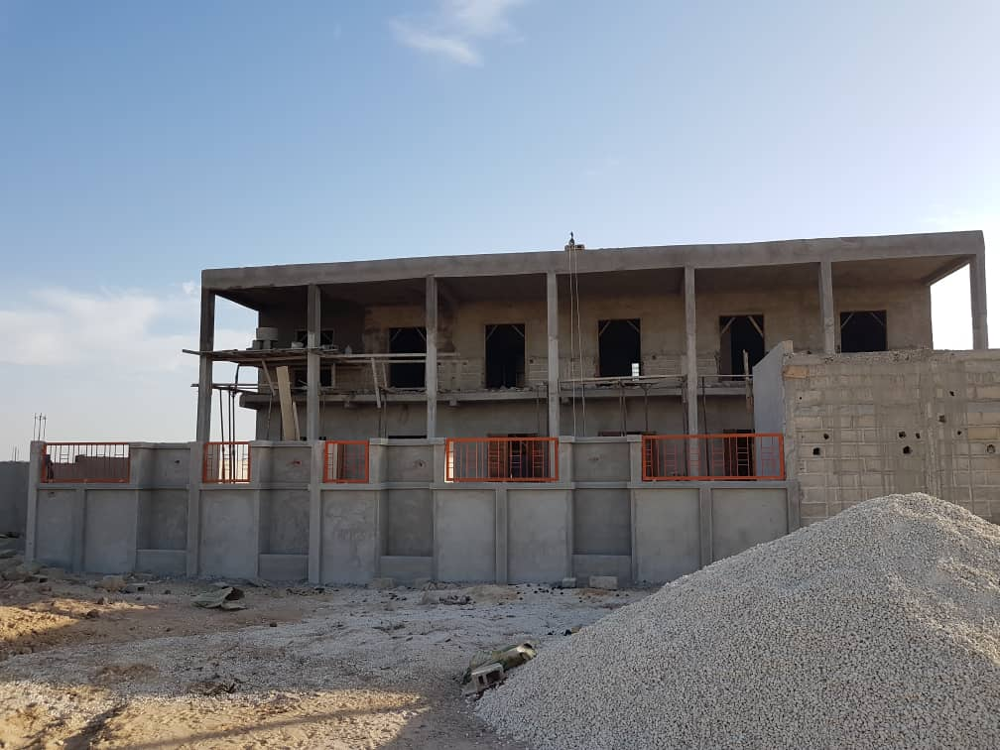
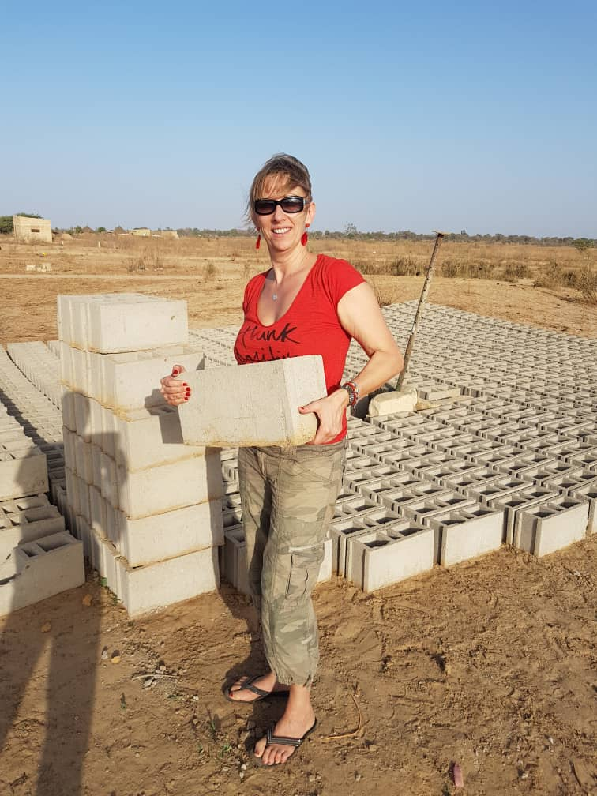
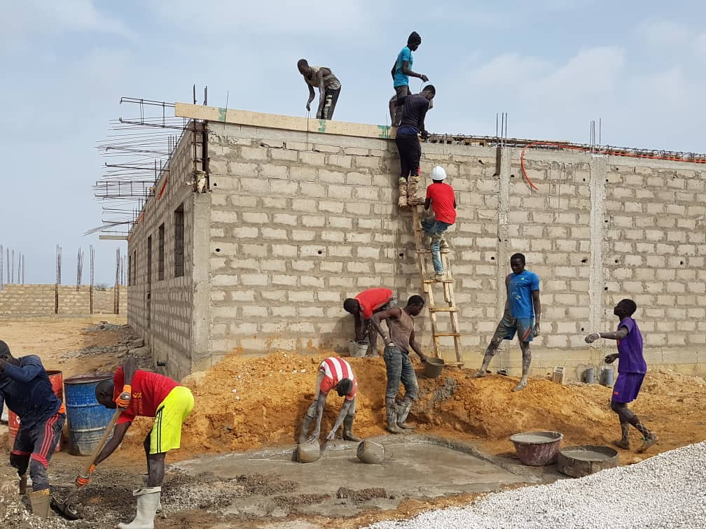
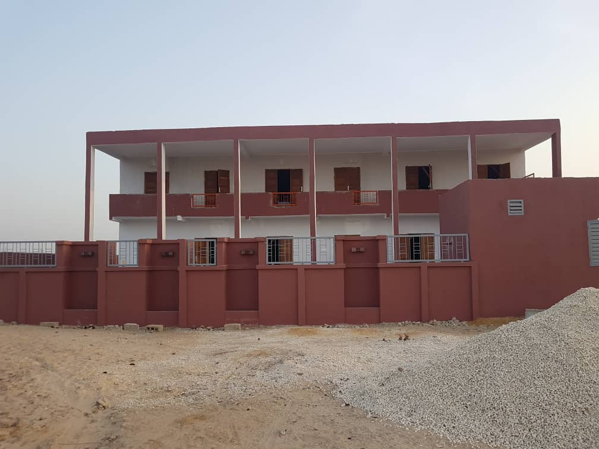
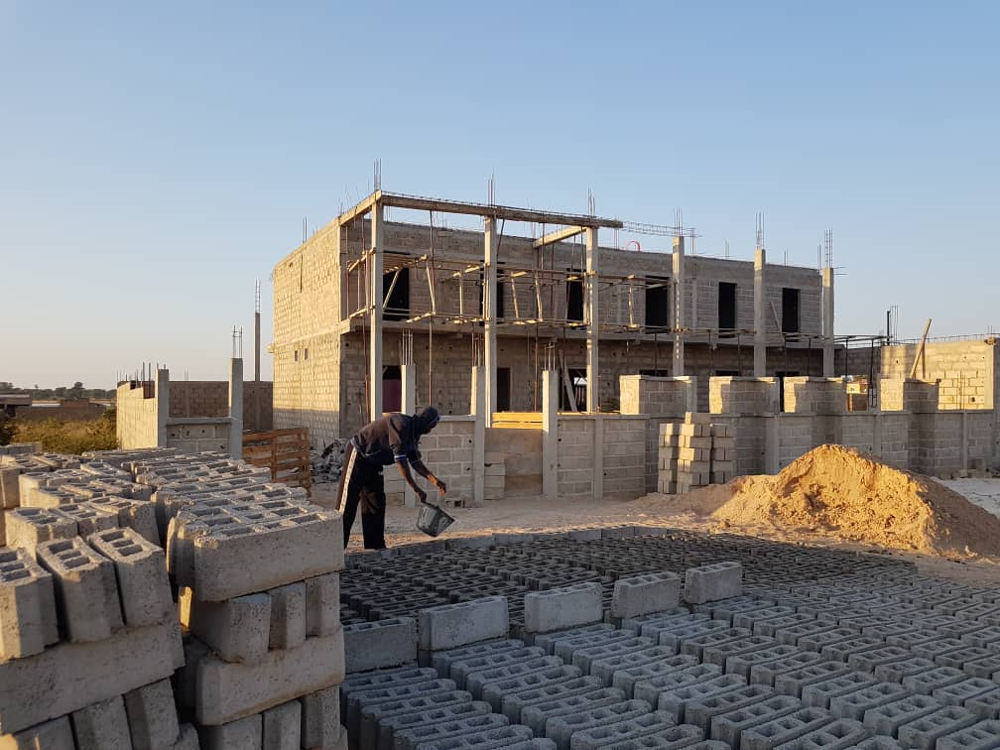
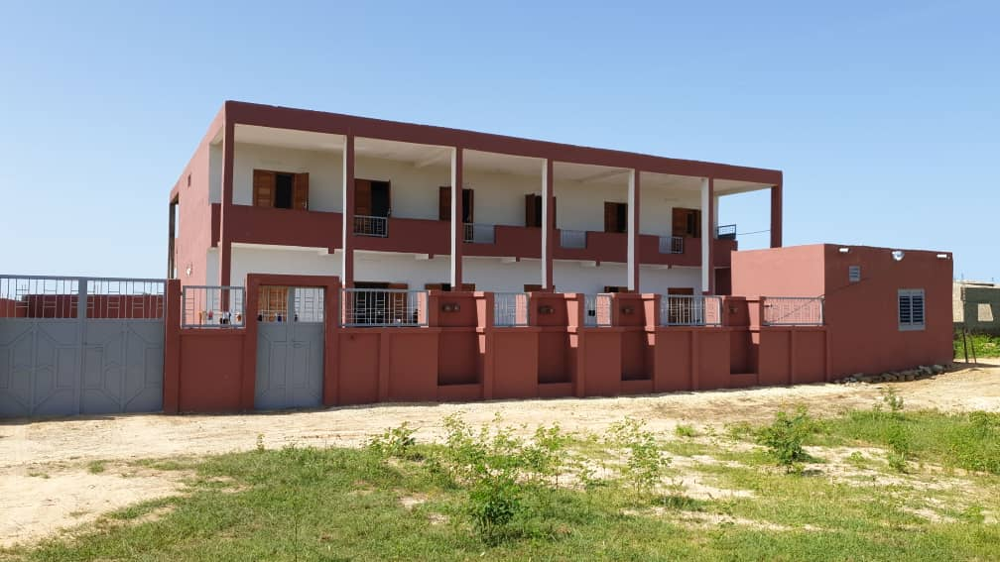

Notre Récit
L'histoire d'une maison construite au bord du Saloum.
En 2018, deux chemins se retrouvent. Véronique et Rassoul, forts d'années d'engagement au sein d'organisations humanitaires, décident de transformer une conviction commune en quelque chose de concret : une maison pour les enfants qui n'en ont pas.
Leur choix se porte sur Foundiougne — petite ville de la région de Fatick, à 140 km au sud de Dakar, sur les rives du Sine Saloum. Entre pêche, mangroves et cultures d'arachides, cette localité paisible n'avait pas encore d'organisation capable de prendre en charge intégralement des enfants défavorisés : hébergement, éducation, soins.
En septembre 2019, la Maison d'Accueil ouvre ses portes. Pas une institution. Un foyer. Un endroit où chaque enfant accueilli peut grandir dans un environnement stable, accéder à une scolarité de qualité, et être accompagné jusqu'à l'université s'il le souhaite.
Depuis, l'Association Kids of the Joy continue, enfant après enfant, année après année — fidèle à la vision de ses fondateurs : offrir à chacun la possibilité de choisir son propre destin.
« Nous croyons en un monde où chaque enfant a le potentiel de briller. »
La Maison d'Accueil a été construite par des artisans locaux, financée par des donateurs et portée par la fondatrice elle-même. De la première pierre à l'ouverture des portes, chaque étape a été le fruit d'un effort collectif et d'une conviction inébranlable.






En construction La maison, terminéeLa maison peut accueillir jusqu'à vingt-cinq enfants, répartis dans deux dortoirs séparés — filles d'un côté, garçons de l'autre. Elle a été pensée pour être un vrai chez-soi : cuisine, salle à manger, salon, espace d'étude, bureau des encadrants, cour de jeu, et même un jardin potager où les enfants cultivent leurs propres légumes.